Abstract
The goal of my research is to explore the benefits of green hydrogen as a clean and renewable energy source that can power vehicles, generate electricity, and store excess renewable energy. Unlike hydrogen made from fossil fuels, green hydrogen produces no carbon emissions, making it a sustainable alternative that supports global efforts to reduce pollution and fight climate change.
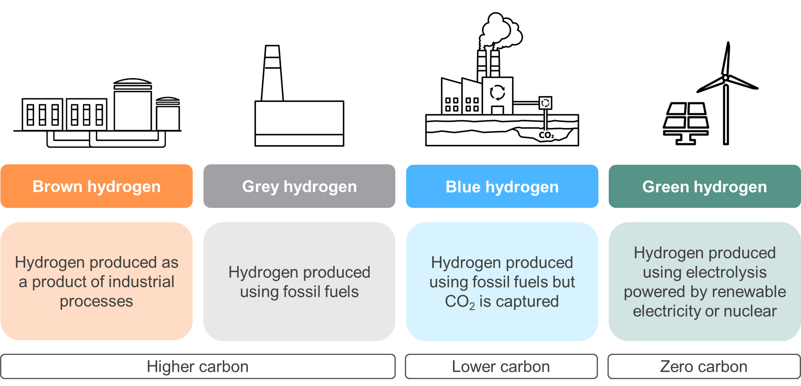
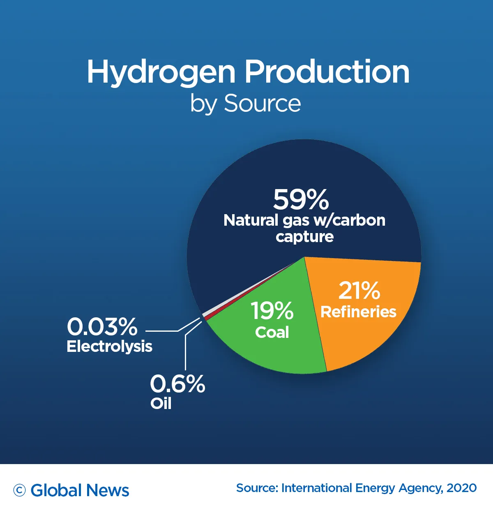
Electrolysis only accounts for about 0.3% of global hydrogen production, and only a small fraction of that is truly green hydrogen powered by renewable energy.
Electrolysis
Traditional electrolysis uses electricity to split water into hydrogen and oxygen inside a tank filled with a liquid alkaline electrolyte, usually potassium hydroxide (KOH). Two electrodes sit in this solution: when current flows, water molecules break apart, producing hydrogen gas at the cathode and oxygen gas at the anode. The alkaline solution helps carry ions between the electrodes and reduces electrical resistance. This method is widely used in green hydrogen production because it’s simple, durable, and relatively inexpensive, but I decided to make something different. Something that is faster and more efficient…
Prototype 1

Artificial leaf
Idea
My artificial leaf was built as a photoelectrochemical water splitting device, and the diagram shows how each layer worked together to mimic the basic function of natural photosynthesis. At the top of the structure is a sheet of FTO glass, which is transparent and conductive so that ultraviolet light can pass through while also collecting the electrons generated in the semiconductor. Beneath it is a thin layer of titanium dioxide (TiO₂), the main light absorbing material in the design. When UV light strikes the TiO₂, it creates electron–hole pairs, which ideally drive the water splitting reactions. To help the oxygen producing side of the reaction, a cobalt oxide (CoOₓ) catalyst layer sits directly under the TiO₂, speeding up the oxygen evolution reaction. A small water gap allows oxygen bubbles to escape without interfering with the rest of the system. In the center of the device is a proton exchange membrane (PEM), which lets protons travel through while keeping hydrogen and oxygen separated. On the opposite side, a piece of nickel foam coated with MoS₂ acts as the hydrogen evolution catalyst, where electrons and protons combine to form hydrogen gas. Altogether, this layered structure was designed to absorb UV light, separate charges, and split water into hydrogen and oxygen in a controlled, leaf like way.
Procedure
Day 1- Coat Titanium Dioxide (TiO₂) on FTO Glass:
1. Prepare FTO Glass by putting conductive side face up, and then tape the edges, leaving one big edge exposed.
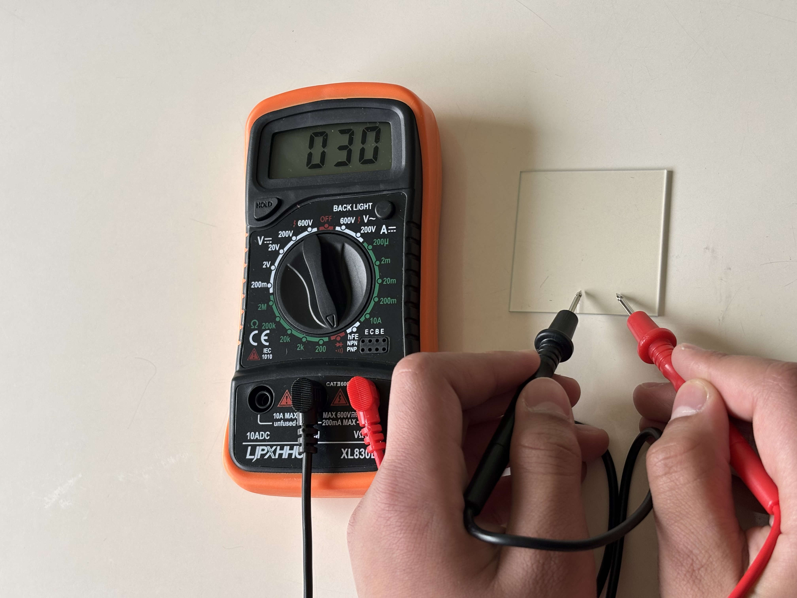
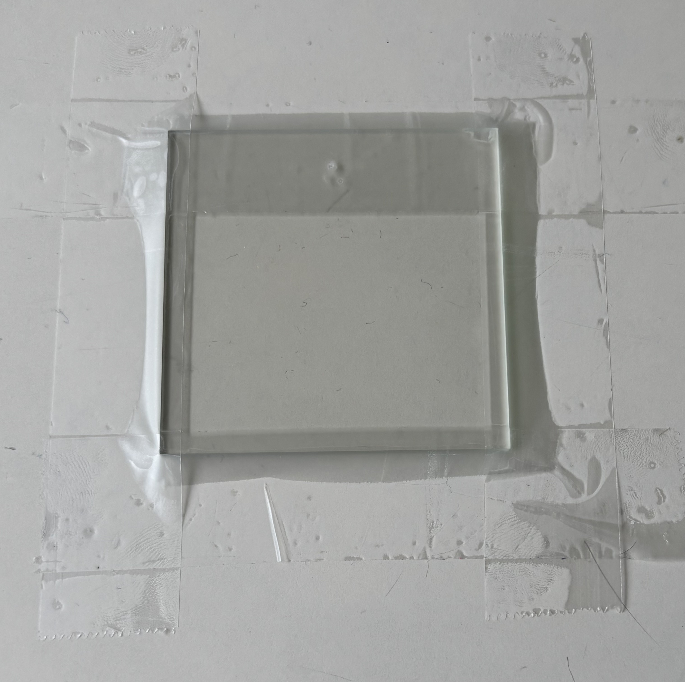
2. Prepare Titanium Dioxide Paste, which is a solution of 1-gram TiO₂ nanopowder(Preferably anatase or P25), 1mL 2% acetic acid (diluted vinegar works), 1 small drop clear glue, 1 small drop Triton X-100. This is all carefully grinded. 3. Drop a bit of paste on the top edge of the glass and take a separate glass to press down at the top and then swipe down in one clean motion to evenly spread the paste evenly across. This is called doctor-blading, and the tape layers act as support and control the thickness.

4. Put the glass into the kiln after leaving it to dry for 15 minutes and taking the tape off. The heating cycle is: Ramp 300°C/hr up to 125°C, stay for 10 minutes Ramp 240°C/hr up to 375°C, stay for 20 minutes Ramp 180°C/hr up to 475°C, stay for 60 minutes
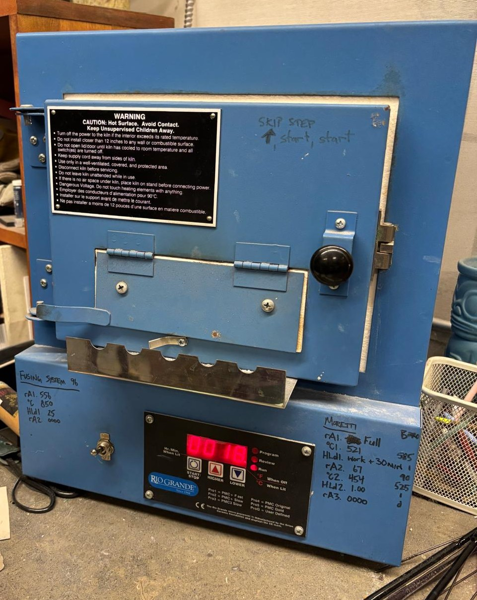
Day 2- Coat Cobalt Oxide on Titanium Dioxide:
1. Prepare the Cobalt Oxide suspension by putting 80mg of Cobalt Oxide nanopowder in a small plastic bottle and add 20 mL of 99% isopropyl alcohol (IPA). Now, shake vigorously for 20 minutes.
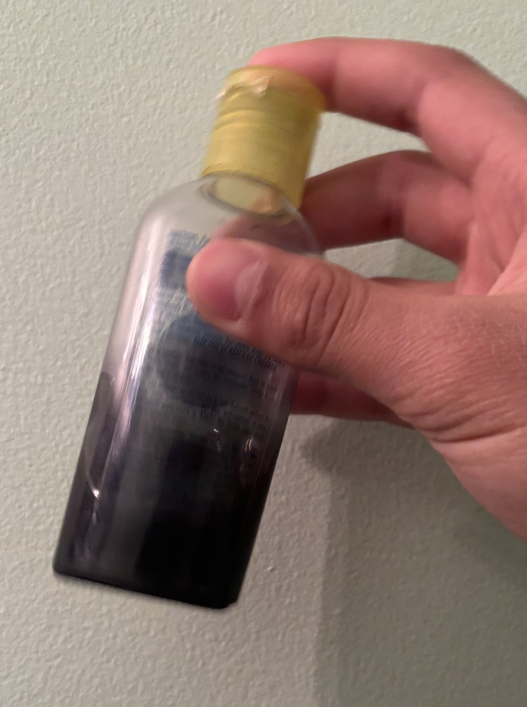
2. Drop the solution on the edge of the TiO₂ film and tilt to spread evenly. Leave to dry for 1 hour.
.jpeg)
3. Time to put it in the kiln again. The cycle this time is: Ramp 180°C/hr up to 120°C, stay for 10 minutes Ramp 240°C/hr up to 375°C, stay for 20 minutes Ramp 180°C/hr up to 450°C, stay for 60 minutes
Day 3- Deposit Molybdenum Disulfide (MoS2) on Nickel Foam:
1. Prepare the MoS2 solution by putting 100mg of MoS2 in a large container, along with 90 mL 99% IPA, 5 small drops of clear glue, and a few tiny crystals of Potassium Iodide (KI). After stirring well, pour solution into smaller container. 2. Connect a negative and positive wire clip to 2 nickel foam electrodes(50x60mm), and then put both electrodes in the liquid, a few centimeters apart to make sure they don’t touch or attract. Then, connect the clips to a DC power source and turn up the voltage to 20 V, keeping it like that for 5-10 minutes. The MoS2 particles have been given a positive surface charge by the KI and will be attracted to the negative electrode. This is called Electrophoretic Deposition (EPD). Wrap the negative foam in aluminum foil after taking it out of the solution and leaving to dry for 1 hour. Foil is to prevent oxidization.
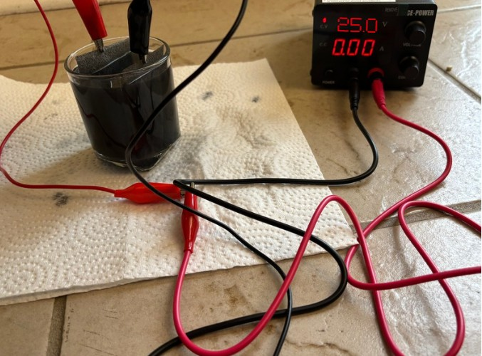
3. Kiln time! Put the wrapped nickel foam in the kiln. The program is: Ramp 180°C/hr up to 80°C, stay for 10 minutes Ramp 200°C/hr up to 310°C, stay for 50 minutes After cool-down, make sure to take off foil.
Day 4- 3D printing, Assembly, and Testing:
1. Test the current and voltage of the TiO₂ film coating on the FTO glass, by putting it into a solution of baking soda and water for conductivity. Next, connect the glass to the positive end of a multimeter, and the negative end of the multimeter is connected to a counter electrode (I used scrap nickel foam). Compare voltage and current from before you turn on the UV lamp 10 cm next to the glass and after you turn it on, the difference is the voltage and current (measure separately).
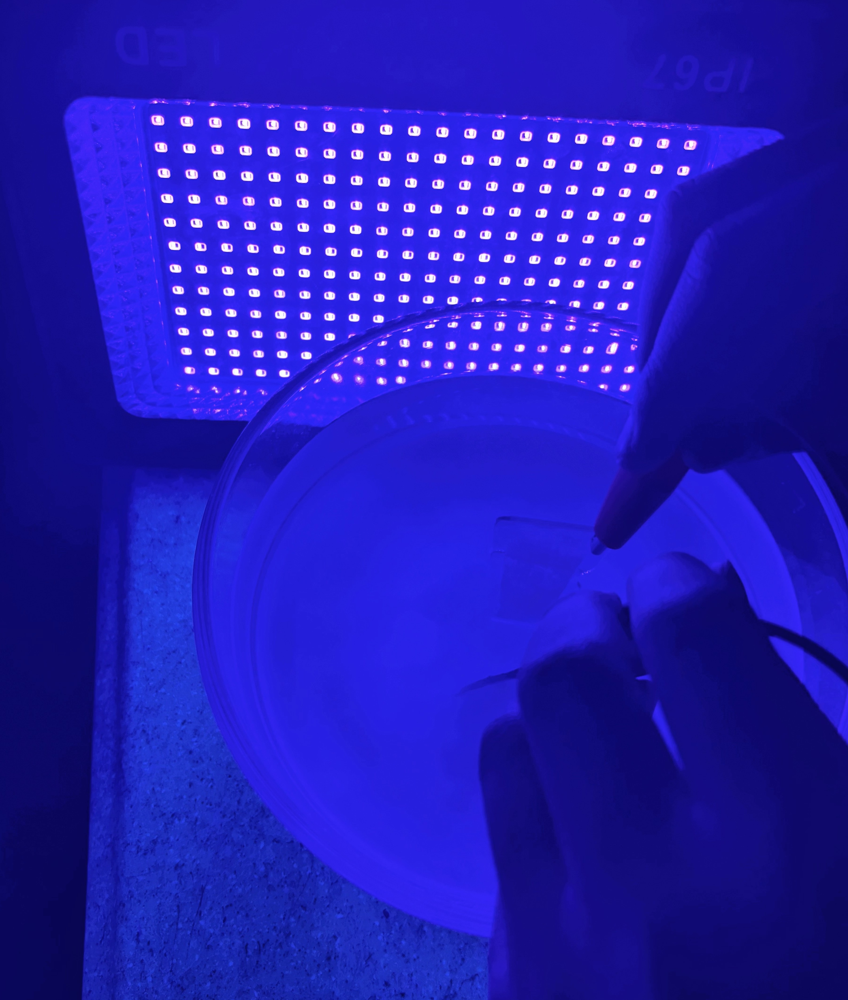
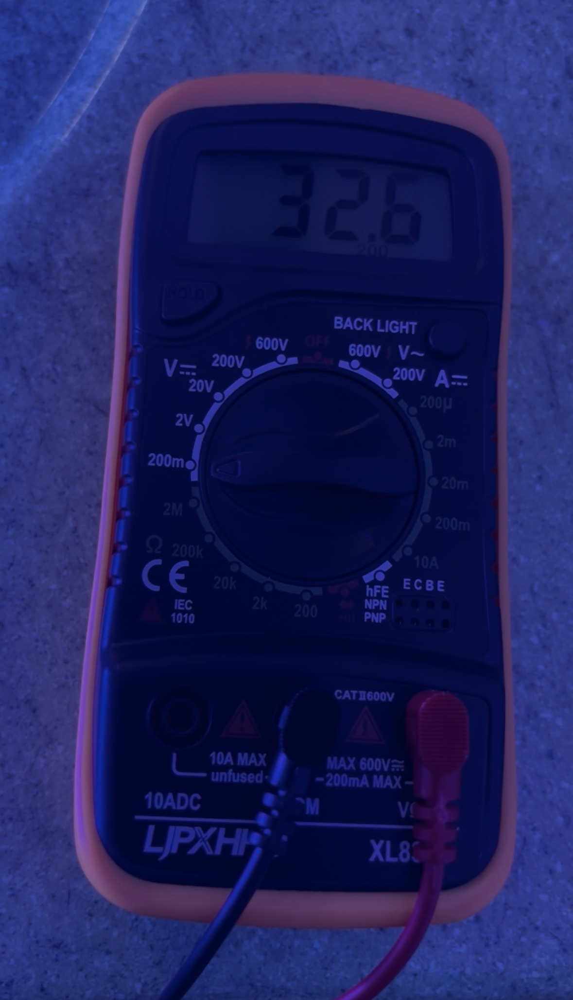
Measuring the Voltage
2. Assemble final “leaf” in this order: front frame, cut-out silicone spacer, FTO glass (coatings on top), PEM (pre-hydrated in water and baking soda, and then rinsed off before use), trimmed Nickel foam, and finally, the back frame. Tie it together in the holes of the frame and then use binder clips of the sides.


3. Connect positive wires, connected to the DC source, to the glass, and connect the negative clip to nickel foam. Put it in a container of distilled water and turn on both the UV lamp (10 cm away), and the DC power source (set to 2 V). Add funnel at the end, which will lead to the 10 mL graduated cylinder.
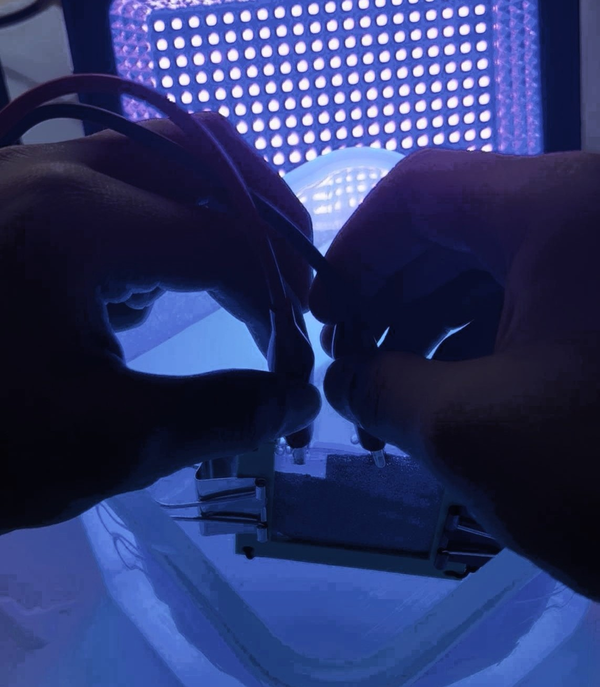
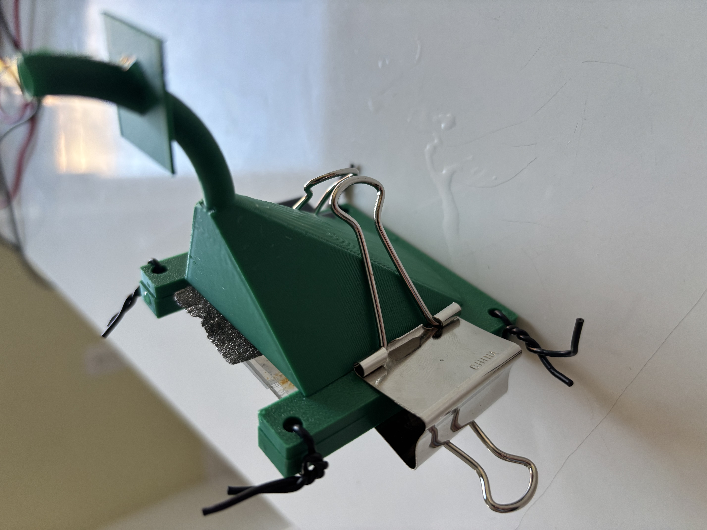
Bubbles coming out from leave Leaf and funnel together
Artificial Leaf Producing Hydrogen:
Results
Though bubbles were clearly visible during testing, there were several issues in my experiment that prevented the artificial leaf from performing efficiently. The device produced a very small but consistent photocurrent of about 0.8 μA and a voltage of roughly 0.0291 V, resulting in only 1.4 × 10⁻⁵ J of electrical energy over ten minutes. Small bubbles formed on the nickel‑foam side in every trial, and about 1 mL of hydrogen was collected each time, but an additional approximate 1–3 mL of gas escaped from gaps around the electrode instead of traveling into the gas‑collection tube. This made the measured volume lower than the total amount produced. Using the 1 mL collected value, the chemical energy stored in the hydrogen was about 11.9 J, giving the artificial leaf an approximate upper‑bound efficiency of ~4% relative to the light energy input. Overall, the artificial leaf operated consistently but produced such low electrical output and released gas through unintended gaps that its performance was limited by the design of the setup.
Prototype 2
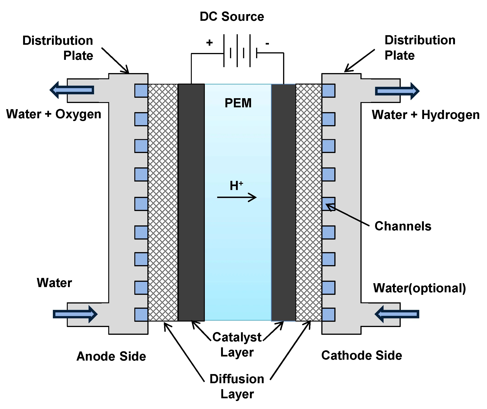
How a PEM electrolyzer works
Credit: MDPI
Idea
The PEM electrolyzer in my setup was a compact water splitting device powered by the solar panel, which provided a strong and stable electrical source, something the artificial leaf could not achieve on its own. As shown in the diagram, water entered on the anode side, where it contacted a commercial oxygen evolution catalyst layer, such as iridium oxide (IrO₂), which is engineered to split water far more efficiently than the untreated TiO₂ surface in my leaf. At this electrode, water molecules were converted into oxygen gas, electrons, and protons. The electrons traveled through the external circuit from the solar panel, while the protons moved through the proton exchange membrane (PEM) in the center of the cell. The PEM allowed only protons to pass, keeping the gases separated and preventing recombination. On the cathode side, the protons met the incoming electrons at another optimized catalyst layer, often platinum in commercial systems, where they combined to form hydrogen gas that exited through the hydrogen outlet. Flow channels and diffusion layers on both sides helped distribute water and gases evenly across the catalysts.
Procedure
1. The PEM electrolyzer is connected to a 5W solar panel, using a stripped USB wire. The red wire is connected to the positive terminal, the black to the negative.
2. Connect a valve to the top of the hydrogen output, which then is connected to a tube, leading to a fuel cell, which converts the hydrogen into electricity by itself, doing essentially the opposite that was done to split water, combing oxygen and hydrogen to form water.
3. The fuel cell should be connected to a multimeter, measuring voltage and current. This then leads to a small fan that the electricity from the fuel cell will power.
4. Put UV lamp directly on top of the solar panel and turn it on for 10 minutes.
5. Measure voltage and current produced by the solar panel using the multimeter every minute, and a starting measure at 0 minutes.
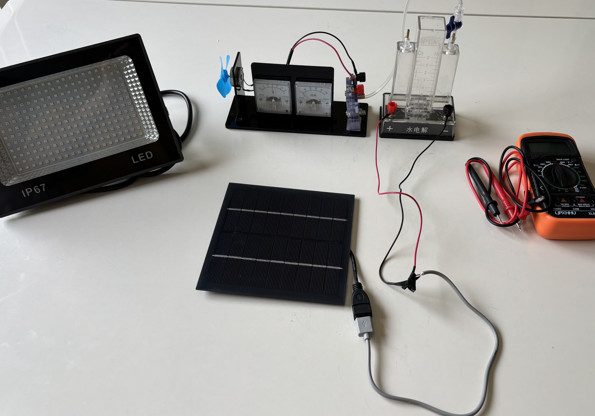
PEM Electrolyzer Setup Running:
Results
During the PEM electrolyzer trials, the solar panel delivered enough power for the cell to consistently produce measurable hydrogen. Over each ten minute run, the voltage ranged from about 7–9 V, fluctuating slightly as the panel warmed up under the lamp, while the current stayed between 30–80 mA. These values resulted in a total electrical input of about 247 J. The electrolyzer produced 1.6 mL of hydrogen in the gas collection tube, which corresponded to 19.1 J of chemical energy stored in the hydrogen. Using these measurements, the final electricity to hydrogen efficiency of the PEM system was calculated to be approximately 7.7%. Overall, the PEM electrolyzer operated reliably throughout all trials, with stable gas production and clear numerical data that allowed its performance to be quantified accurately.
Conclusion
Overall, the clear winner in my experiment was the solar‑panel‑powered PEM electrolyzer, which consistently produced measurable hydrogen and operated with an electricity‑to‑hydrogen efficiency of about 7.7%. It outperformed the TiO₂ artificial leaf because it had a strong and stable power source, optimized commercial catalysts, and effective gas separation, while the artificial leaf generated extremely low photocurrents and released much of its hydrogen through gaps in the frame instead of directing it fully into the collection tube. Although both systems functioned, only the PEM setup produced reliable numerical data and meaningful hydrogen output. There were several important sources of error in this project. Because the entire experiment was built at home rather than in a controlled laboratory, many components had to be improvised, including the gas‑collection system, wiring, and electrode mounting. The artificial leaf in particular suffered from limitations caused by homemade construction, uneven coatings, and the open geometry that allowed hydrogen bubbles to escape before entering the collection tube. Heat from the lamp also caused the solar panel voltage to fluctuate over time, which affected the exact power delivered to the PEM. These factors introduced uncertainty into the measurements, but they also reflect the challenges of building complex electrochemical devices outside of professional equipment. Even with these limitations, the experiment demonstrates how promising green‑hydrogen technologies can be when supported by proper engineering. PEM electrolyzers are already being used in clean‑energy projects around the world, and artificial‑leaf research continues to push toward sunlight‑driven hydrogen production. Understanding what worked and what failed in my designs helps show what future improvements are needed and reminds us that solving climate and energy challenges will come from continued innovation, curiosity, and hands‑on experimentation.
Efficiency Calculator
Select Mode
Energy Input: 0 J
Hydrogen Energy: 0 J
Efficiency: 0%
Harvard’s Design (Bionic Leaf)

Credits: BBC Studios, Harvard University